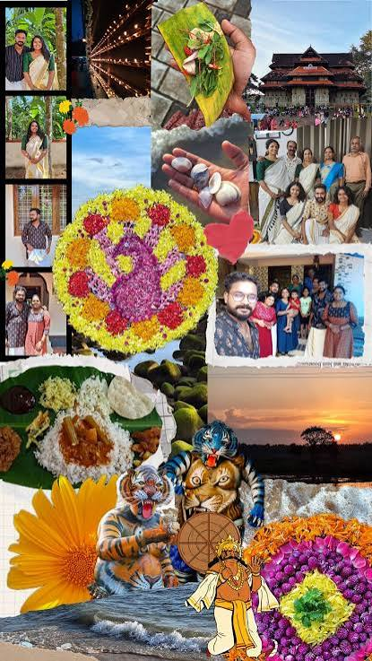
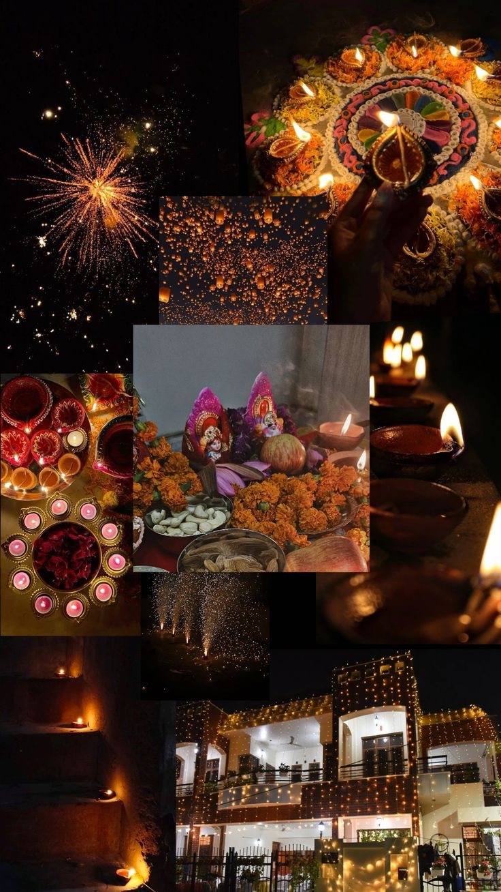
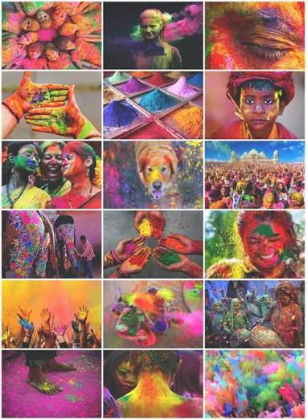

Onam is a vibrant harvest festival from Kerala celebrated with grand boat races, intricate flower carpets (pookalam), and a traditional multi-course feast served on banana leaves.

Diwali, known as the Festival of Lights, is celebrated across India by lighting clay lamps, bursting firecrackers, and exchanging sweets to signify the victory of light over darkness.

Diwali, known as the Festival of Lights, is celebrated across India by lighting clay lamps, bursting firecrackers, and exchanging sweets to signify the victory of light over darkness.